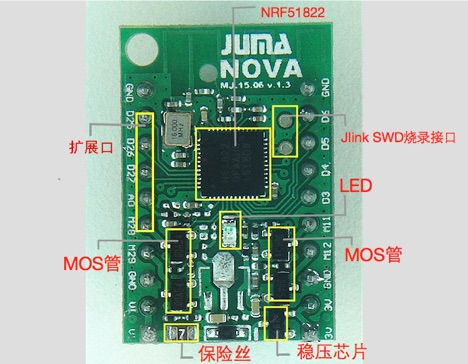

NOVA的烧写
SWD调试接口¶
NOVA的正面如下所示:

nRF51822采用的是SWD的调试接口，所以，这里需要用到J-Link的调试器。从上图中可以看到SWD的烧录接口。
一般来说，调试器有两种，一种是常见的J-Link，还有一种就是J-LinkOB这样的精简版本的调试器。
1. NOVA与J-Link OB的连接方式¶
一般J-Link OB上面是会将接口标识出来的。只要将J-Link上面的CLK与板子上的CLK连接，J-Link上面的DIO与板子上面的DIO互相连接，烧录器就连接好了。
2. NOVA与J-Link v8的连接方式¶
J-Link v8的接口如下图所示：
连接方式为：
烧入协议栈和SDK¶
下载最新的SDK：
https://github.com/JUMA-IO/nRF51_Platform
进入SDK的image文件夹，双击批处理进行烧入。
之后会提示，表示烧入成功。
你也可以用嵌入式资源里的
重烧协议栈，一样的效果。
烧入应用层代码¶
接下来就可以在Keil中打开相应的例程代码，编译与下载应用层代码了。